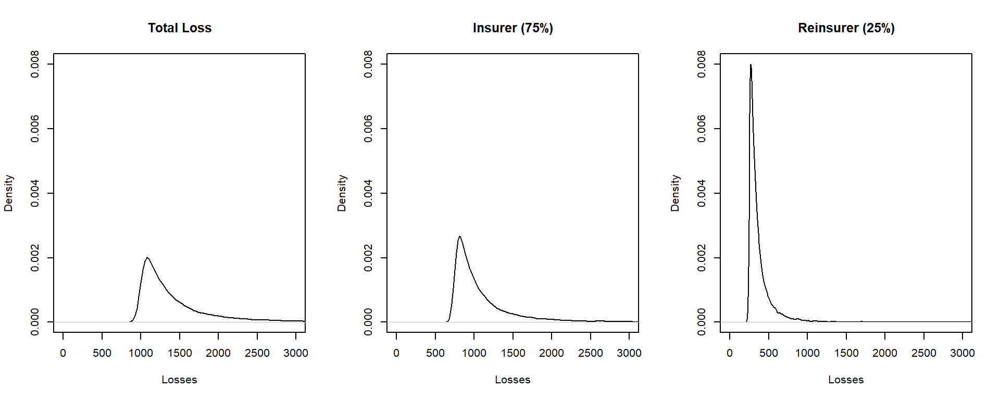

Chapter 13 Insurance Portfolio Management including Reinsurance
Chapter Preview. An insurance portfolio is simply a collection of insurance contracts. To help manage the uncertainty of the portfolio, this chapter
- quantifies unusually large obligations by examining the tail of the distribution,
- quantifies the overall riskiness by introducing summaries known as risk measures, and
- discusses options of spreading portfolio risk through reinsurance, the purchase of insurance protection by an insurer.
13.1 Introduction to Insurance Portfolios
In previous chapters, our analyses primarily focused on the contract level, which represents agreements between policyholders and insurers. Insurers maintain and manage portfoliosA collection of contracts, which are essentially collections of these individual contracts. Conceptually, one can liken an insurance company to nothing more than a collection, or portfolio, of insurance contracts. Similar to banking and investments, there are management decisions that are made exclusively at the portfolio level. Within this chapter, we address three crucial actuarial tasks: quantifying the impact of extreme events, determining overall portfolio risk, and managing insurance portfolios through reinsurance.
Insurance portfoliosA collection, or aggregation, of insurance contracts, representing the obligations of insurers, pique our interest primarily due to the probabilities associated with significant outcomes. These outcomes often translate to unusually large obligations. To illustrate, within property and casualty insurance, large obligations frequently stem from unforeseen consequences of climate-related risks. For instance, consider the freezing rain event of 1998 that swept through eastern Ontario and southwestern Quebec, lasting six days. This calamity resulted in double the typical precipitation for the region during an ice storm and gave rise to a catastrophe, triggering over 840,000 insurance claims. Astonishingly, this number exceeded the claims filed in the wake of Hurricane Andrew, one of North America’s most extensive natural disasters. The catastrophe led to insurance settlements exceeding 1.44 billion Canadian dollars, marking the highest loss burden in Canada’s history. Such incidents are not isolated; similar catastrophic events, like Hurricane Harvey, Superstorm Sandy, the 2011 Japanese earthquake and tsunami, have also caused extreme insurance losses. In our exploration of extreme events in insurance, we introduce the concept of heavy-tailed distributions in Section 13.2.
Insurance companies engage in the buying and selling of risks as if they were commodities. As we explored in Chapter 10, greater uncertainty associated with risks typically translates into higher prices. In that chapter, pricing principles were introduced to quantify the magnitude of these risks. Furthermore, insurance portfolios represent the obligations of a company and, although they are not traded on a marketplace, they require careful management. One crucial aspect of this management is aligning the size of the obligations with an equivalent amount of assets. The subsequent Chapter 14 on loss reserves offers practical methods for achieving this alignment. Additionally, insurers need to assess the extent of their obligations for purposes such as capacity planning, policy formulation, and maintaining a balanced product portfolio that fosters revenue growth while managing volatility. To facilitate these tasks, Section 13.3 introduces risk measures that succinctly capture the uncertainty inherent in the distribution of an insurance portfolio.
Similar to individuals, insurance companies manage their risk portfolios by acquiring insurance, in this case, risk protection from reinsurersA company that sells reinsurance, which are insurance companies serving insurers. Just as individuals can structure the amount of risk they retain through mechanisms like deductibles and policy limits, insurers employ similar strategies to structure their risk portfolios. This practice of sharing insurance portfolio risk is detailed in Section 13.4, where we delve into the concept of reinsurance.
These three actuarial tasks, quantifying the impact of extreme events, determining overall portfolio risk, and managing insurance portfolios through reinsurance, are based on the distribution of insurance portfolios. In Chapter 7, we delved into modeling the distribution of insurance portfolios as the sum of individual contracts where we used \(S\) for aggregate losses. Now, this chapter is dedicated to the direct exploration of portfolio distributions and so we revert to the traditional \(X\) notation.
Show Quiz Solution
13.2 Tails of Distributions
In this section, you learn how to:
- Describe a heavy tail distribution intuitively.
- Classify the heaviness of a distribution’s tails based on moments.
- Compare the tails of two distributions.
For extreme events such as those due to climate risks, a few major events hitting a portfolio and then converting into losses usually represent the greatest part of the indemnities paid by insurance companies. The aforementioned losses, also called ‘extremes’, are quantitatively modeled by the tails of the associated probability distributions. From the quantitative modeling standpoint, relying on probabilistic models having lengthy tails can be daunting. For instance, periods of financial stress may appear with a higher frequency than expected, and insurance losses may occur with worse severity. Therefore, the study of probabilistic behavior in the tail portion of actuarial models is important in quantitative risk management. For this reason, this section introduces a few mathematical notions that describe the tail weight of random variables. These notions will benefit us in the construction and selection of appropriate models with desired mathematical properties in the tail portion.
Formally, define \(X\) to be the random obligations that arise from a collection (portfolio) of insurance contracts. At the portfolio level, we are particularly interested in studying the right tail of the distribution of \(X\) which represents the occurrence of large losses. Informally, a random variable is said to be heavy-tailed if high probabilities are assigned to large values. This does not imply that the probability density/mass function increases as the value of \(X\) goes to infinity. Indeed, for a real-valued random variable, the pdfProbability density function/pmfProbability mass function must diminish at infinity in order to guarantee the total probability to be equal to one. Instead, what we are concerned about is the rate of decay of the pdf/pmf. Unwelcome outcomes are more likely to occur for an insurance portfolio that is described by a loss random variable possessing a heavier (right) tail. Tail weight can be an absolute or a relative concept. Specifically, for the former, we may consider a random variable to be heavy-tailed if certain mathematical properties of the probability distribution are met. For the latter, we can say the tail of one distribution is heavier/lighter than the other if some tail measures are larger/smaller.
Several quantitative approaches have been proposed to classify and compare tail weights. For most of these approaches, the survival functionOne minus the distribution function. it gives the probability that a rv exceeds a specific value. serves as the building block. In what follows, we introduce two simple yet useful tail classification methods both of which are based on the behavior of the survival function of \(X\).
13.2.1 Classification Based on Moments
One way of classifying the tail weight of a distribution is by determining whether or not a raw moment is finite. Because our major interest lies in the right tail of a distribution, we henceforth assume the obligation or loss random variable \(X\) to be non-negative. At the outset, the \(k-\)th raw moment of a continuous random variable \(X\), introduced in Section 4.1, can be expressed as \[ \mu_k' = \int_0^{\infty} x^k f(x) ~dx = k \int_0^{\infty} x^{k-1} S(x) ~dx, \\ \] where \(S(\cdot)\) denotes the survival function of \(X\). This expression emphasizes that the finiteness of the raw moments depends on the asymptotic behavior of the survival function at infinity. Namely, the faster the survival function decays to zero, the higher is the order (\(k\)) is which the associated random variable may be finite. To capture this idea, we can formally define \(k^{\ast}=\sup\{k > 0:\mu_k'<\infty \}\), where \(sup\) represents the supremum operator. You may interpret \(k^{\ast}\) to be the largest value of \(k\) so that the moment is finite.
This definition leads us to a moment-based tail weight classification method which is defined as follows.
Definition 13.1. Consider a non-negative loss random variable \(X\).
- If all the positive raw moments exist, namely the maximal order of finite moment \(k^{\ast}=\infty\), then \(X\) is said to be light tailed based on the moment method.
- If \(k^{\ast} < \infty\), then \(X\) is said to be heavy tailedA rv is said to be heavy tailed if high probabilities are assigned to large values based on the moment method.
- Moreover, for two positive loss random variables \(X_1\) and \(X_2\) with maximal orders of moment \(k^{\ast}_1\) and \(k^{\ast}_2\) respectively, we say \(X_1\) has a heavier (right) tail than \(X_2\) if \(k^{\ast}_1\leq k^{\ast}_2\).
The first part of Definition 13.1 is an absolute concept of tail weight, while the second part is a relative concept of tail weight which compares the (right) tails between two distributions. Next, we present a few examples that illustrate the applications of the moment-based method for comparing tail weight.
Example 13.2.1. Light tail nature of the gamma distribution. Let \(X\sim gamma(\alpha,\theta)\), with \(\alpha>0\) and \(\theta>0\). Show that \(\mu_k' < \infty\) for all \(k>0\).
Show Example Solution
Example 13.2.2. Light tail nature of the Weibull distribution. Let \(X\sim Weibull(\theta,\tau)\), with \(\theta>0\) and \(\tau>0\). Show that \(\mu_k' < \infty\) for all \(k>0\).
Show Example Solution
The gamma and Weibull distributions are used extensively in the actuarial practice. Applications of these two distributions are vast which include, but are not limited to, insurance claim severity modeling, solvency assessment, loss reserving, aggregate risk approximation, reliability engineering and failure analysis. We have thus far seen two examples of using the moment-based method to analyze light-tailed distributions. We document a heavy-tailed example in what follows.
Example 13.2.3. Heavy tail nature of the Pareto distribution. Let \(X\sim Pareto(\alpha,\theta)\), with \(\alpha>0\) and \(\theta>0\). Then, for \(k>0\), \[\begin{eqnarray*} \mu_k^{'} &=& \int_0^{\infty} x^k \frac{\alpha \theta^{\alpha}}{(x+\theta)^{\alpha+1}} dx \\ &=& \alpha \theta^{\alpha} \int_{\theta}^{\infty} (y-\theta)^k {y^{-(\alpha+1)}} dy. \end{eqnarray*}\] From basic calculus, recall that \[\begin{eqnarray*} INT_k= \int_{\theta}^{\infty} {y^{k-\alpha-1}} dy=\left\{ \begin{array}{ll} <\infty, & \text{for } k<\alpha;\\ =\infty, & \text{for } k\geq \alpha. \end{array} \right. \end{eqnarray*}\] Also note that: \[\lim_{y\rightarrow \infty} \frac{(y-\theta)^k {y^{-(\alpha+1)}}}{y^{k-\alpha-1}}=\lim_{y\rightarrow \infty} (1-\theta/y)^{k}=1.\] Application of the limit comparison theorem for improper integrals yields \(\mu_k'\) is finite if and only if \(INT_k\) is finite. Hence we can conclude that the raw moments of Pareto random variables exist only up to \(k<\alpha\), i.e., \(k^{\ast}=\alpha\), and thus the distribution is heavy-tailed.
What is more, the maximal order of finite moment depends only on the shape parameter \(\alpha\) and it is an increasing function of \(\alpha\). In other words, based on the moment method, the tail weight of Pareto random variables is solely manipulated by \(\alpha\) – the smaller the value of \(\alpha\), the heavier the tail weight becomes. Since \(k^{\ast}<\infty\), the tail of Pareto distribution is heavier than those of the gamma and Weibull distributions.
Despite its simple implementation and intuitive interpretation, there are certain circumstances in which the application of the moment-based method is not suitable.
- For more complicated probabilistic models, the \(k\)-th raw moment may not be simple to derive, and thus the identification of the maximal order of finite moment can be challenging.
- For more complicated probabilistic models, the \(k\)-th raw moment may not be simple to derive, and thus the identification of the maximal order of finite moment can be challenging.
- The moment-based method does not well comply with main body of the well established heavy tail theory in the literature. Specifically, the existence of moment generating functions is arguably the most popular method for classifying heavy tail versus light tail within the community of academic actuaries. However, for some random variables such as the lognormal random variables, their moment generating functions do not exist even though all the positive moments are finite. In these cases, applications of the moment-based methods can lead to different tail weight assessment.
- When we need to compare the tail weight between two light-tailed distributions (where both have all finite positive moments), the moment-based method is no longer informative (see, e.g., Examples 13.2.1 and 13.2.2).
13.2.2 Comparison Based on Limiting Tail Behavior
In order to resolve the aforementioned issues of the moment-based classification method, an alternative approach for comparing tail weight is to directly study the limiting behavior of the survival functions.
Definition 13.2. For two random variables \(X\) and \(Y\), let \[ \gamma=\lim_{t\rightarrow \infty}\frac{S_X(t)}{S_Y(t)}. \] We say that
- \(X\) has a heavier right tail than \(Y\) if \(\gamma=\infty\),
- \(X\) and \(Y\) are proportionally equivalent in the right tail if \(\gamma =c \in (0, \infty)\), and
- \(X\) has a lighter right tail than \(Y\) if \(\gamma=0\).
Example 13.2.4. Comparison of Pareto to Weibull distributions. Let \(X\sim Pareto(\alpha, \theta)\) and \(Y\sim Weibull(\tau, \theta)\), for \(\alpha>0\), \(\tau>0\), and \(\theta>0\). Show that the Pareto has a heavier right tail than the Weibull.
Show Example Solution
For some distributions of which the survival functions do not admit explicit expressions, we may find the following alternative formula useful: \[\begin{eqnarray*} \lim_{t\to \infty} \frac{S_X(t)}{S_Y(t)} &=& \lim_{t \to \infty} \frac{S_X^{'}(t)}{S_Y^{'}(t)} \\ &=& \lim_{t \to \infty} \frac{-f_X(t)}{-f_Y(t)}\\ &=& \lim_{t\to \infty} \frac{f_X(t)}{f_Y(t)} , \end{eqnarray*}\] given that the density functions exist. This is an application of L’Hôpital’s Rule from calculus.
Example 13.2.5. Comparison of Pareto to gamma distributions. Let \(X\sim Pareto(\alpha, \theta)\) and \(Y\sim gamma(\alpha, \theta)\), for \(\alpha>0\) and \(\theta>0\). Show that the Pareto has a heavier right tail than the gamma.
Show Example Solution
Show Quiz Solution
13.3 Risk Measures
In this section, you learn how to:
- Define the value-at-risk and calculate this quantity for a given distribution.
- Define the expected shortfall and calculate this quantity for a given distribution.
- Define the idea of coherence and determine whether or not a risk measure is coherent.
In the previous section, we studied two methods for classifying the weight of distribution tails. We may claim that the risk associated with one distribution is more dangerous (asymptotically) than the other if the tail is heavier. However, knowing that one risk is more dangerous than the other may not provide sufficient information for risk management purposes and, in addition, one is also interested in quantifying how much more. In fact, the magnitude of risk associated with a given loss distribution is an essential input for many insurance applications, such as actuarial pricing, reserving, hedging, insurance regulatory oversight, and so forth.
The literature on risk measures has been growing rapidly in popularity and importance. In the next two subsections, we introduce two indices which have earned interest among theoreticians, practitioners, and regulators. They are namely the Value-at-Risk (\(VaR\)) and the Expected Shortfall (\(ES\)) measures. The rationale underpinning these two risk measures is similar to that for the tail classification methods – we hope to capture the uncertainty of extreme losses.
13.3.1 Value-at-Risk
In Section 4.4.1.2, we defined the quantile of a distribution. We now look to a special case of this and offer the formal definition of the value-at-riskA risk measure based on a quantile function, or VaR.
Definition 13.3. Consider an insurance loss random variable \(X\). The value-at-risk measure of \(X\) with confidence level \(q\in (0,1)\) is formulated as \[\begin{eqnarray} VaR_q[X]=\inf\{x:F_X(x)\geq q\}. \tag{13.1} \end{eqnarray}\] Here, \(inf\) is the infimum operator so that the \(VaR\) measure outputs the smallest value of \(x\) such that the associated cdfCumulative distribution function exceeds or equates to \(q\). This is simply the quantileThe q-th quantile is the point(s) at which the distribution function is equal to q, i.e. the inverse of the cumulative distribution function. that was introduced in Section 4.1.2.
Here is how we should interpret \(VaR\) in the context of actuarial applications. The \(VaR\) is a measure of the ‘maximal’ probable loss for an insurance product/portfolio or a risky investment occurring \(q \times 100\%\) of times, over a specific time horizon (typically, one year). For instance, if we let \(X\) be the annual loss random variable of an insurance product, then \(VaR_{0.95}[X]=100\) million means that there is no more than a \(5 \%\) chance that the loss will exceed 100 million over a given year. Owing to this meaningful interpretation, \(VaR\) has become the industry standard for measuring financial and insurance risks since the 1990’s. Financial conglomerates, regulators, and academics often utilize \(VaR\) to measure risk capital, ensure the compliance with regulatory rules, and disclose the financial positions.
Next, we present a few examples concerning the computation of \(VaR\).
Example 13.3.1. \(VaR\) for the exponential distribution. Consider an insurance loss random variable \(X\) with an exponential distribution having parameter \(\theta\) for \(\theta>0\), then the cdf of \(X\) is given by \[ F_X(x)=1-e^{-x/\theta}, \text{ for } x>0. \] Give a closed-form expression for the \(VaR\).
Show Example Solution
The result reported in Example 13.3.1 can be generalized to any continuous random variables having a strictly increasing cdf. Specifically, the \(VaR\) of any continuous random variables is simply the inverse of the corresponding cdf. Let us consider another example of continuous random variable which has the support from negative infinity to positive infinity.
Example 13.3.2. \(VaR\) for the normal distribution. Consider an insurance loss random variable \(X\sim Normal(\mu,\sigma^2)\) with \(\sigma>0\). In this case, one may interpret the negative values of \(X\) as profit or revenue. Give a closed-form expression for the \(VaR\).
Show Example Solution
In many insurance applications, we have to deal with transformations of random variables. For instance, in Example 13.3.2, the loss random variable \(X\sim Normal(\mu, \sigma^2)\) can be viewed as a linear transformation of a standard normal random variable \(Z\sim Normal(0,1)\), namely \(X=Z\sigma+\mu\). By setting \(\mu=0\) and \(\sigma=1\), it is straightforward for us to check \(VaR_q[Z]=\Phi^{-1}(q).\) A useful finding revealed from Example 13.3.2 is that the \(VaR\) of a linear transformation of the normal random variables is equivalent to the linear transformation of the \(VaR\) of the original random variables. This finding can be further generalized to any random variables as long as the transformations are strictly increasing.
Example 13.3.3. \(VaR\) for transformed variables. Consider an insurance loss random variable \(Y\) with a lognormal distribution with parameters \(\mu \in \mathbf{R}\) and \(\sigma^2>0\). Give an expression of the \(VaR\) of \(Y\) in terms of the standard normal inverse cdf.
Show Example Solution
We have thus far seen a number of examples about the \(VaR\) for continuous random variables, let us consider an example concerning the \(VaR\) for a discrete random variable.
Example 13.3.4. \(VaR\) for a discrete random variable. Consider an insurance loss random variable with the following probability distribution: \[ {\small \Pr[X=x] = \left\{ \begin{array}{ll} 0.75, & \text{for }x=1 \\ 0.20, & \text{for }x=3 \\ 0.05, & \text{for }x=4. \end{array} \right. } \] Determine the \(VaR\) at \(q = 0.6, 0.9, 0.95, 0.95001\).
Show Example Solution
Let us now conclude the current subsection by an open discussion of the \(VaR\) measure. Some advantages of utilizing \(VaR\) include
- possessing a practically meaningful interpretation, and
- relatively simple to compute for many distributions with closed-form distribution functions.
On the other hand, the limitations of \(VaR\) can be particularly pronounced for some risk management practices. We report some of them herein:
- the selection of the confidence level \(q\in (0,1)\) is highly subjective, while the \(VaR\) can be very sensitive to the choice of \(q\) (e.g., in Example 13.3.4, \(VaR_{0.95}[X]=3\) and \(VaR_{0.950001}[X]=4\));
- the scenarios/loss information that are above the \((1-q)\times 100\%\) worst event, are completely neglected;
- as will be seen in Section 13.3.3, the \(VaR\) is not a coherent risk measure.
The \(VaR\) represents the \((1-q)\times100\%\) chance maximal loss. One major drawback of the \(VaR\) measure is that it does not reflect the extremal losses occurring beyond the \((1-q)\times100\%\) chance worst scenario. For illustrative purposes, let us consider the following slightly unrealistic yet inspiring example.
Example 13.3.5. Consider two loss random variable’s \(X\sim Uniform [0,100]\), and \(Y\) with an exponential distribution having parameter \(\theta=31.71\). We use \(VaR\) at \(95\%\) confidence level to measure the riskiness of \(X\) and \(Y\). Simple calculation yields (see, also, Example 13.3.1), \[ VaR_{0.95}[X]=VaR_{0.95}[Y]=95, \] and thus these two loss distributions have the same level of risk according to \(VaR_{0.95}\). However, \(Y\) is riskier than \(X\) if extremal losses are of major concern since \(X\) is bounded above while \(Y\) is unbounded. Simply quantifying risk by using \(VaR\) at a specific confidence level could be misleading and may not reflect the true nature of risk.
13.3.2 Expected Shortfall
Another commonly used risk measure is the expected shortfall, \(ES\). Mathematically, we can express this as \[\begin{equation} ES_{q}(X) = \frac{1}{1-q} \int_{q}^{1} VaR_{a}(X) d a . \tag{13.2} \end{equation}\] That is, the \(ES\) is the average of \(VaR_{\alpha}[X]\) with varying degree of confidence level over \(\alpha\in [q,1]\). Thus, it is also known as the average value at risk. In this respect, one can see that for any given \(q \in (0,1)\) \[ ES_q[X] \geq VaR_q[X]. \] The \(ES\) effectively resolves most of the limitations of \(VaR\) outlined in the previous subsection. First, due to the averaging effect, the \(ES\) may be less sensitive to the change of confidence level compared with \(VaR\). Second, all the extremal losses that are above the \((1-q)\times 100\%\) worst probable event are taken in account.
There are a few other forms of the \(ES\) that will be useful to us. For notional convenience, we write \(\pi_q = VaR_q[X]\) and have \[\begin{equation} ES_{q}(X) = \left\{\begin{array}{cl} \frac{1}{1-q} \int_{q}^{1} VaR_{a}(X) d a & \text{Expected Shortfall}\\ \pi_q + \frac{1}{1- q} \left\{ \mathrm{E} [X] - \mathrm{E} [X \wedge \pi_q ] \right\} & \text{Tail VaR}\\ \mathrm{E} (X | X > \pi_q ) & \text{Conditional VaR} . \end{array} \right. \tag{13.3} \end{equation}\] The different expressions in Display (13.3) hold under some additional (mild) assumptions on the continuity of the distribution function at the point \(\pi_q\). As we are interested in applications to portfolios, we employ such assumptions in this chapter which allows us to describe alternative ways of thinking about these measures. For example, from the third expression, we see that \(ES\) can also be interpreted to be the expected amount given that the loss exceeds the \(VaR_{q}\).
Naturally, analysts may work with distributions where the assumptions of continuity do not hold, such as discrete distributions (see the examples Chapter 3). For these distributions, Display (13.3) provides a definition for some alternative risk measures, the Tail value-at-risk and the Conditional value-at-risk. You can learn more about these alternative risk measures in the references given in Section 13.6.
Show Development of the ES
Using the third expression in Display (13.3), the computation of \(ES\) consists of two major steps - the \(VaR\) and the average of losses that are above the \(VaR\). From this and a change of variables, the \(ES\) can be computed via \[\begin{eqnarray} ES_{q}[X]=\frac{1}{(1-q)}\int_{\pi_q}^{\infty}xf_X(x)dx. \tag{13.4} \end{eqnarray}\]
Example 13.3.6. \(ES\) for a normal distribution. Consider an insurance loss random variable \(X\sim Normal (\mu,\sigma^2)\) with \(\mu\in \mathbf{R}\) and \(\sigma>0\). Give an expression for \(ES\).
Show Example Solution
We mentioned earlier in the previous subsection that the \(VaR\) of a strictly increasing function of random variable is equal to the function of \(VaR\) of the original random variable. Motivated by the results in Example 13.3.6, one can show that the \(ES\) of a strictly increasing linear transformation of random variable is equal to the function of \(VaR\) of the original random variable. This is due to the linearity property of expectations. However, the aforementioned finding cannot be extended to non-linear functions. The following example of lognormal random variable serves as a counter example.
Example 13.3.7. \(ES\) of a lognormal distribution. Consider an insurance loss random variable \(X\) with a lognormal distribution having parameters \(\mu \in \mathbf{R}\) and \(\sigma>0\). Show that \[ ES_q[X] = \frac{e^{\mu+\sigma^2/2}}{(1-q)} \Phi(\Phi^{-1}(q)-\sigma). \]
Show Example Solution
Clearly, the \(ES\) of lognormal random variable is not the exponential of the \(ES\) of normal random variable.
For distributions of which the survival distribution functions are more tractable to work with, we may apply the integration by parts technique (assuming the mean is finite) to rewrite equation (13.4) as \[\begin{eqnarray*} ES_{q}[X]&=&\left[-x S_X(x)\big |_{\pi_q}^{\infty}+\int_{\pi_q}^{\infty}S_X(x)dx\right]\frac{1}{(1-q)}\\ &=& \pi_q +\frac{1}{(1-q)}\int_{\pi_q}^{\infty}S_X(x)dx. \end{eqnarray*}\]
Example 13.3.8. \(ES\) of an exponential distribution. Consider an insurance loss random variable \(X\) with an exponential distribution having parameter \(\theta\) for \(\theta>0\). Give an expression for the \(ES\).
Show Example Solution
The second expression in Display (13.3) shows how to express the \(ES\) in terms of limited expected values. For many commonly used parametric distributions, the formulas for calculating \(\mathrm{E}[X]\) and \(\mathrm{E}[X\wedge\pi_q]\) can be found in a table of distributions.
Example 13.3.9. \(ES\) of a Pareto distribution. Consider a loss random variable \(X\sim Pareto(\theta,\alpha)\) with \(\theta>0\) and \(\alpha>0\). The cdf of \(X\) is given by \[ F_X(x)=1-\left(\frac{\theta}{\theta+x} \right)^{\alpha}, \text{ for } x>0 . \] Fix \(q\in (0,1)\) and set \(F_X(\pi_q)=q\), we readily obtain \[\begin{eqnarray} \pi_q=\theta\left[(1-q)^{-1/\alpha}-1 \right]. \tag{13.6} \end{eqnarray}\] From Section 20.2, we know that \(\mathrm{E}[X]=\frac{\theta}{\alpha-1}\), and \[ \mathrm{E}[X\wedge \pi_q]= \frac{\theta}{\alpha-1} \left[ 1-\left(\frac{\theta}{\theta+\pi_q}\right)^{\alpha-1} \right]. \] The second expression in Display (13.3) yields \[\begin{eqnarray*} ES_q[X] &=& \pi_q+\frac{\theta}{\alpha-1} \frac{[\theta/(\theta+\pi_q)]^{\alpha-1}} {(\theta/(\theta+\pi_q))^{\alpha}}\\ &=&\pi_q +\frac{\theta}{\alpha-1}\left( \frac{\pi_q+\theta}{\theta} \right)\\ &=& \pi_q+\frac{\pi_q+\theta}{\alpha-1}, \end{eqnarray*}\] where \(\pi_q\) is given by (13.6).
13.3.3 Coherent Risk Measures
The \(VaR\) and \(ES\) are widely used risk measures but how does the analyst know which one to employ? Broadly speaking, we seek a function that maps the loss random variable of interest to a numerical value indicating the level of riskiness, which is termed the risk measureA measure that summarizes the riskiness, or uncertainty, of a distribution. Put mathematically, the risk measure simply summarizes the distribution function of a random variable as a single number.
The \(VaR\) and \(ES\) are risk measures but one might also consider two simpler alternatives, the mean \(\mathrm{E}[X]\) and the standard deviation \(\mathrm{SD}(X)\) \(=\sqrt{\mathrm{Var}(X)}\). In addition, other classical special cases include the standard deviation principle \[\begin{equation} H_{\mathrm{SD}}(X)=\mathrm{E}[X]+\alpha \mathrm{SD}(X),\text{ for } \alpha\geq 0, \tag{13.7} \end{equation}\] and the variance principle \[ H_{\mathrm{Var}}(X)=\mathrm{E}[X]+\alpha \mathrm{Var}(X),\text{ for } \alpha\geq 0. \] One can check that all the aforementioned functions are risk measures in which we input the loss random variable and the functions output a numerical value. In contrast, the function \(H^{\ast}(X)=\alpha X^{\beta}\) for any real-valued \(\alpha,\beta\neq 0\), is not a risk measure because \(H^{\ast}\) produces another random variable rather than a single numerical value.
Because risk measures are scalar measures which aim to describe the stochastic uncertainty of loss random variables distributions, it is not surprising that no risk measure can capture all the risk information of the associated random variables. Therefore, when seeking useful risk measures, it is important for us to keep in mind that the measures should be:
- interpretable practically,
- computable conveniently, and
- able to reflect the most critical information of risk underpinning the loss distribution.
Several risk measures have been developed in the literature. Unfortunately, there is no best risk measure that can outperform the others, and the selection of appropriate risk measure depends on the application questions at hand. In this respect, there are multiple approaches to assess the uncertainty. However, for many risk management applications, there is a wide agreement that economically grounded risk measures should satisfy four major axioms, described as follows.
Consider a risk measure \(H(\cdot)\). It is said to be a coherent risk measureA risk measure that is is subadditive, monontonic, has positive homogeneity, and is translation invariant. for two random variables \(X\) and \(Y\) if the following axioms are satisfied.
- Axiom 1. Subadditivity: \(H(X+Y)\leq H(X)+H(Y)\).
- The economic implication of this axiom is that diversification benefits exist if different risks are combined.
- The economic implication of this axiom is that diversification benefits exist if different risks are combined.
- Axiom 2. Monotonicity: if \(\Pr[X\leq Y]=1\), then \(H(X)\leq H(Y)\).
- Recall that \(X\) and \(Y\) are random variables representing losses, the underlying economic implication is that higher losses essentially leads to a higher level of risk.
- Recall that \(X\) and \(Y\) are random variables representing losses, the underlying economic implication is that higher losses essentially leads to a higher level of risk.
- Axiom 3. Positive homogeneity: \(H(cX)=cH(X)\) for any positive constant \(c\).
- A potential economic implication about this axiom is that risk measure should be independent of the monetary units in which the risk is measured. For example, let \(c\) be the currency exchange rate between the US and Canadian dollars, then the risk of random losses measured in terms of US dollars (i.e., \(X\)) and Canadian dollars (i.e., \(cX\)) should be different only up to the exchange rate \(c\) (i.e., \(cH(x)=H(cX)\)).
- A potential economic implication about this axiom is that risk measure should be independent of the monetary units in which the risk is measured. For example, let \(c\) be the currency exchange rate between the US and Canadian dollars, then the risk of random losses measured in terms of US dollars (i.e., \(X\)) and Canadian dollars (i.e., \(cX\)) should be different only up to the exchange rate \(c\) (i.e., \(cH(x)=H(cX)\)).
- Axiom 4. Translation invariance: \(H(X+c)=H(X)+c\) for any positive constant \(c\).
- If the constant \(c\) is interpreted as risk-free cash and \(X\) is an insurance portfolio, then adding cash to a portfolio only increases the portfolio risk by the amount of cash.
Verifying these properties can be straightforward but can be also be challenging at times. For example, it is a simple matter to check that the mean is a coherent risk measure.
Special Case. The Mean is a Coherent Risk Measure.
For any pair of random variables \(X\) and \(Y\) having finite means and constant \(c>0\),
- validation of subadditivity: \(\mathrm{E}[X+Y]=\mathrm{E}[X]+\mathrm{E}[Y]\);
- validation of monotonicity: if \(\Pr[X\leq Y]=1\), then \(\mathrm{E}[X]\leq \mathrm{E}[Y]\);
- validation of positive homogeneity: \(\mathrm{E}[cX]=c\mathrm{E}[X]\);
- validation of translation invariance: \(\mathrm{E}[X+c]=\mathrm{E}[X]+c\)
With a little more effort, we can determine the following.
Special Case. The Standard Deviation is not a Coherent Risk Measure.
Show Verification of the Special Case
We have so far checked that \(\mathrm{E}[\cdot]\) is a coherent risk measure and that \(\mathrm{SD}(\cdot)\) is not. Exercise 13.1 asks you to study the coherent property for the standard deviation principle (13.7) which is a linear combination of coherent and incoherent risk measures.
It turns out that the \(VaR\) is not a coherent risk measure. Specifically, the \(VaR\) measure does not satisfy the subadditivity axiom, meaning that diversification benefits may not be fully reflected.
In contrast, \(ES\) is a coherent risk measure and thus is able to more accurately capture the diversification effects of insurance portfolio. Herein, we do not intend to provide the proof of the coherent feature for \(ES\), which is considered to be challenging technically.
Show Quiz Solution
13.4 Reinsurance
In this section, you learn how to:
- Define basic reinsurance treaties including proportional, quota share, non-proportional, stop-loss, excess of loss, and surplus share.
- Interpret the optimality of quota share for reinsurers and compute optimal quota share agreements.
- Interpret the optimality of stop-loss for insurers.
- Interpret and calculate optimal excess of loss retention limits.
Recall from Section 5.1.4 that reinsuranceInsurance purchased by an insurer is simply insurance purchased by an insurer. Insurance purchased by non-insurers is sometimes known as primary insuranceInsurance purchased by a non-insurer to distinguish it from reinsurance. Reinsurance differs from personal insurance purchased by individuals, such as auto and homeowners insurance, in contract flexibility. Like insurance purchased by major corporations, reinsurance programs are generally tailored more closely to the buyer. For contrast, in personal insurance buyers typically cannot negotiate on the contract terms although they may have a variety of different options (contracts) from which to choose.
The two broad types are proportional and non-proportional reinsurance. A proportional reinsuranceAn agreement between a reinsurer and a ceding company (also known as the reinsured) in which the reinsurer assumes a given percent of losses and premium contract is an agreement between a reinsurer and a ceding companyA company that purchases reinsurance (also known as the reinsured) (also known as the reinsuredA company that purchases reinsurance (also known as the ceding company)) in which the reinsurer assumes a given percent of losses and premium. A reinsurance contract is also known as a treatyA reinsurance contract that applies to a designated book of business or exposures.. Non-proportional agreements are simply everything else. As examples of non-proportional agreements, this chapter focuses on stop-loss and excess of loss contracts. For all types of agreements, we split the total risk \(X\) into the portion taken on by the reinsurer, \(Y_{reinsurer}\), and that retained by the insurer, \(Y_{insurer}\), that is, \(X= Y_{insurer}+Y_{reinsurer}\).
The mathematical structure of a basic reinsurance treaty is the same as the coverage modifications of personal insurance introduced in Chapter 5. For a proportional reinsurance, the transformation \(Y_{insurer} = c X\) is identical to a coinsurance adjustment in personal insurance. For stop-loss reinsurance, the transformation \(Y_{reinsurer} = \max(0,X-M)\) is the same as an insurer’s payment with deductible \(M\) and \(Y_{insurer} = \min(X,M) = X \wedge M\) is equivalent to what a policyholder pays with deductible \(M\). For practical applications of the mathematics, in personal insurance the focus is generally upon the expectation as this is a key ingredient used in pricing. In contrast, for reinsurance the focus is on the entire distribution of the risk, as the extreme events are a primary concern of the financial stability of the insurer and reinsurer.
This section describes the foundational and most basic of reinsurance treaties: Section 13.4.1 for proportional and Section 13.4.2 for non-proportional reinsurance. Section 13.4.3 gives a flavor of more complex contracts.
13.4.1 Proportional Reinsurance
The simplest example of a proportional treaty is called quota shareA proportional treaty where the reinsurer receives a flat percent of the premium for the book of business reinsured and pays a percentage of losses, including allocated loss adjustment expenses. the reinsurer may also pays the ceding company a ceding commission which is designed to reflect the differences in underwriting expenses incurred..
- In a quota share treaty, the reinsurer receives a flat percent, say 50%, of the premium for the book of business reinsured.
- In exchange, the reinsurer pays 50% of losses, including allocated loss adjustment expenses.
- The reinsurer also pays the ceding company a ceding commission which is designed to reflect the differences in underwriting expenses incurred.
The amounts paid by the primary insurer and the reinsurer are summarized as \[ Y_{insurer} = c X \ \ \text{and} \ \ \ Y_{reinsurer} = (1-c) X, \] where \(c\in (0,1)\) denotes the proportion retained by the insurer. Note that \(Y_{insurer}+Y_{reinsurer}=X\).
Example 13.4.1. Distribution of losses under quota share. To develop an intuition for the effect of quota-share agreement on the distribution of losses, the following is a short R demonstration using simulation. The accompanying figure provides the relative shapes of the distributions of total losses, the retained portion (of the insurer), and the reinsurer’s portion.

Show the R Code
Optimizing Quota Share Agreements for Insurers
Now assume \(n\) risks in the portfolio, \(X_1, \ldots, X_n,\) so that the portfolio sum is \(X= X_1 + \cdots + X_n\). For simplicity, we focus on the case of independent risks (extensions to dependence is the subject of Chapter 16). Each risk \(X_i\) may represent risk of an individual policy, claim, or a sub-portfolio, depending on the application. As an example of the latter, the insurer may subdivide its portfolio into subportfolios consisting of lines of business such as (1) personal auto, (2) commercial auto, (3) homeowners, (4) workers’ compensation, and so forth.
In general, let us consider a variation of the basic quota share agreement where the amount retained by the insurer may vary with each risk, say \(c_i\). Thus, the insurer’s portion of the portfolio risk is \(Y_{insurer} = \sum_{i=1}^n c_i X_i\). What is the best choice of the proportions \(c_i\)?
To formalize this question, we seek to find those values of \(c_i\) that minimize \(\mathrm{Var} (Y_{insurer})\) subject to the constraint that \(\mathrm{E} (Y_{insurer}) = K.\) The requirement that \(\mathrm{E} (Y_{insurer}) = K\) suggests that the insurers wishes to retain a revenue in at least the amount of the constant \(K\). Subject to this revenue constraint, the insurer wishes to minimize the uncertainty of the retained risks as measured by the variance.
Show the Optimal Retention Proportions
From the math, it turns out that the constant for the \(i\)th risk, \(c_i\) is proportional to \(\frac{\mathrm{E}(X_i)}{\mathrm{Var} (X_i)}\). This is intuitively appealing. Other things being equal, a higher revenue as measured by \(\mathrm{E} (X_i)\) means a higher value of \(c_i\). In the same way, a higher value of uncertainty as measured by \(\mathrm{Var}(X_i)\) means a lower value of \(c_i\). The proportional scaling factor is determined by the revenue requirement \(\mathrm{E}(Y_{insurer}) = K\). The following example helps to develop a feel for this relationship.
Example 13.4.2. Three Pareto risks. Consider three risks that have a Pareto distribution, each having a different set of parameters (so they are independent but non-identical). Specifically, use the parameters:
- \(\alpha_1 =3\), \(\theta_1=1000\) for the first risk \(X_1\),
- \(\alpha_2 =3\), \(\theta_2=2000\) for the second risk \(X_2\), and
- \(\alpha_3 =4\), \(\theta_3=3000\) for the third risk \(X_3\).
Provide a graph that gives values of \(c_1\), \(c_2\), and \(c_3\) for a required revenue \(K\). Note that these values increase linearly with \(K\).
Show an Example with Three Pareto Risks

13.4.2 Non-Proportional Reinsurance
The Optimality of Stop-Loss Insurance
Under a stop-lossUnder a stop-loss arrangement, the insurer sets a retention level and pays in full total claims less than the level with the reinsurer paying the excess. arrangement, the insurer sets a retention level \(M (>0)\) and pays in full total claims for which \(X \le M\). Further, for claims for which \(X > M\), the primary insurer pays \(M\) and the reinsurer pays the remaining amount \(X-M\). That is, the insurer retains an amount \(M\) of the risk and the reinsurer pays the excess. Summarizing this mathematically, the amounts paid by the primary insurer and the reinsurer are \[ Y_{insurer} = \begin{cases} X & \text{for } X \le M\\ M & \text{for } X >M \\ \end{cases} \ \ \ \ = \min(X,M) = X \wedge M \] and \[ Y_{reinsurer} = \begin{cases} 0 & \text{for } X \le M\\ X- M & \text{for } X >M \\ \end{cases} \ \ \ \ = \max(0,X-M) . \] As before, note that \(Y_{insurer}+Y_{reinsurer}=X\).
The stop-loss type of contract is particularly desirable for the insurer. Similar to earlier, suppose that an insurer and reinsurer wish to enter a contract so that \(Y_{insurer}=g(X)\) and \(Y_{reinsurer}=X-g(X)\) for some generic retention functionA function that maps the insurer portfolio loss into the amount of loss retained by the insurer. \(g(\cdot)\). Suppose further that the insurer only cares about the variability of retained claims and is indifferent to the choice of \(g\) as long as \(\mathrm{Var}(Y_{insurer})\) can be minimized. Again, we impose the constraint that \(\mathrm{E}(Y_{insurer}) = K\); the insurer needs to retain a revenue \(K\). Subject to this revenue constraint, the insurer wishes to minimize uncertainty of the retained risks (as measured by the variance). Then, the following result shows that the stop-loss reinsurance treaty minimizes the insurer’s uncertainty.
Proposition. Suppose that \(\mathrm{E}(Y_{insurer})=K\) and choose \(M\) such that \(\mathrm{E}(X \wedge M)=K\). Then, \(\mathrm{Var} (X \wedge M) \le \mathrm{Var}[g(X)]\) for all \(g(.)\) such that \(\mathrm{E}[g(X)]= K\).
Show the Justification of the Proposition
The proposition is intuitively appealing - with stop-loss insurance, the reinsurer takes the responsibility for very large claims in the tail of the distribution, not the insurer.
Excess of Loss
A closely related form of non-proportional reinsurance is the excess of lossUnder an excess of loss arrangement, the insurer sets a retention level for each claim and pays claim amounts less than the level with the reinsurer paying the excess. coverage. Under this contract, we assume that the total risk \(X\) can be thought of as composed as \(n\) separate risks \(X_1, \ldots, X_n\) and that each of these risks are subject to an upper limit, say, \(M_i\). So the insurer retains \[ Y_{insurer} = \sum_{i=1}^n Y_{i,insurer}, \ \ \ \ \text{where} \ \ \ \ \ Y_{i,insurer} = X_i \wedge M_i. \] and the reinsurer is responsible for the excess, \(Y_{reinsurer}=X - Y_{insurer}\). The retention limits may vary by risk or may be the same for all risks, that is, \(M_i =M\), for all \(i\).
Optimal Choice for Excess of Loss Retention Limits
What is the best choice of the excess of loss retention limits \(M_i\)? To formalize this question, we seek to find those values of \(M_i\) that minimize \(\mathrm{Var}(Y_{insurer})\) subject to the constraint that \(\mathrm{E}(Y_{insurer}) = K.\) Subject to this revenue constraint, the insurer wishes to minimize the uncertainty of the retained risks (as measured by the variance).
Show the Optimal Retention Proportions
From the math, it turns out that the retention limit less the expected insurer’s claims, \(M_i - \mathrm{E}(X_i \wedge M_i)\), is the same for all risks. This is intuitively appealing.
Example 13.4.3. Excess of loss for three Pareto risks. Consider three risks that have a Pareto distribution, each having a different set of parameters (so they are independent but non-identical). Use the same set of parameters as in Example 13.4.2. For this example:
- Show numerically that the optimal retention limits \(M_1\), \(M_2\), and \(M_3\) resulting retention limit minus expected insurer’s claims, \(M_i - \mathrm{E}(X_i \wedge M_i)\), is the same for all risks, as we derived theoretically.
- Further, graphically compare the distribution of total risks to that retained by the insurer and by the reinsurer.
Show an Example with Three Pareto Risks
13.4.3 Additional Reinsurance Treaties
Layers of Coverage
One can also extend non-proportional stop-loss treaties by introducing additional parties to the contract. For example, instead of simply an insurer and reinsurer or an insurer and a policyholder, think about the situation with all three parties, a policyholder, insurer, and reinsurer, who agree on how to share a risk. More generally, we consider \(k\) parties. If \(k=3\), it could be an insurer and two different reinsurers.
Example 13.4.4. Layers of coverage for three parties.
- Suppose that there are \(k=3\) parties. The first party is responsible for the first 100 of claims, the second responsible for claims from 100 to 3000, and the third responsible for claims above 3000.
- If there are four claims in the amounts 50, 600, 1800 and 4000, then they would be allocated to the parties as follows:
| Layer | Claim 1 | Claim 2 | Claim 3 | Claim 4 | Total |
|---|---|---|---|---|---|
| (0, 100] | 50 | 100 | 100 | 100 | 350 |
| (100, 3000] | 0 | 500 | 1700 | 2900 | 5100 |
| (3000, \(\infty\)) | 0 | 0 | 0 | 1000 | 1000 |
| Total | 50 | 600 | 1800 | 4000 | 6450 |
To handle the general situation with \(k\) groups, partition the positive real line into \(k\) intervals using the cut-points \[ 0 = M_0 < M_1 < \cdots < M_{k-1} < M_k = \infty. \] Note that the \(j\)th interval is \((M_{j-1}, M_j]\). Now let \(Y_j\) be the amount of risk shared by the \(j\)th party. To illustrate, if a loss \(x\) is such that \(M_{j-1} <x \le M_j\), then \[ \left(\begin{array}{c} Y_1\\ Y_2 \\ \vdots \\ Y_j \\Y_{j+1} \\ \vdots \\Y_k \end{array}\right) =\left(\begin{array}{c} M_1-M_0 \\ M_2-M_1 \\ \vdots \\ x-M_{j-1} \\ 0 \\ \vdots \\0 \end{array}\right) \]
More succinctly, we can write \[ Y_j = \min(X,M_j) - \min(X,M_{j-1}) . \] With the expression \(Y_j = \min(X,M_j) - \min(X,M_{j-1})\), we see that the \(j\)th party is responsible for claims in the interval \((M_{j-1}, M_j].\) With this, you can check that \(X = Y_1 + Y_2 + \cdots + Y_k.\) As emphasized in the following example, we also remark that the parties need not be different.
Example 13.4.5.
- Suppose that a policyholder is responsible for the first 100 of claims and all claims in excess of 100,000. The insurer takes claims between 100 and 100,000.
- Then, we would use \(M_1 = 100\), \(M_2 =100000\).
- The policyholder is responsible for \(Y_1 =\min(X,100)\) and \(Y_3 = X - \min(X,100000) = \max(0, X-100000)\).
For additional reading, see the Wisconsin Property Fund site for an example on layers of reinsurance.
Portfolio Management Example
Many other variations of the foundational contracts are possible. For one more illustration, consider the following.
Example 13.4.6. Portfolio Management. You are the Chief Risk Officer of a telecommunications firm. Your firm has several property and liability risks. We will consider:
- \(X_1\) - buildings, modeled using a gamma distribution with mean 200 and scale parameter 100.
- \(X_2\) - motor vehicles, modeled using a gamma distribution with mean 400 and scale parameter 200.
- \(X_3\) - directors and executive officers risk, modeled using a Pareto distribution with mean 1000 and scale parameter 1000.
- \(X_4\) - cyber risks, modeled using a Pareto distribution with mean 1000 and scale parameter 2000.
Denote the total risk as \(X = X_1 + X_2 + X_3 + X_4\). For simplicity, you assume that these risks are independent. (Later, in Section 16.6, we will consider the more complex case of dependence.)
To manage the risk, you seek some insurance protection. You wish to manage internally small building and motor vehicles amounts, up to \(M_1\) and \(M_2\), respectively. You seek insurance to cover all other risks. Specifically, the insurer’s portion is \[ Y_{insurer} = (X_1 - M_1)_+ + (X_2 - M_2)_+ + X_3 + X_4 ,\] so that your retained risk is \(Y_{retained}= X- Y_{insurer} =\) \(\min(X_1,M_1) + \min(X_2,M_2)\). Using deductibles \(M_1=\) 100 and \(M_2=\) 200:
- Determine the expected claim amount of (i) that retained, (ii) that accepted by the insurer, and (iii) the total overall amount.
- Determine the 80th, 90th, 95th, and 99th percentiles for (i) that retained, (ii) that accepted by the insurer, and (iii) the total overall amount.
- Compare the distributions by plotting the densities for (i) that retained, (ii) that accepted by the insurer, and (iii) the total overall amount.
Show Example Solution with R Code

13.5 Exercises
Theoretical Exercise
Exercise 13.1. In this exercise, you will demonstrate that only under specific circumstances can the standard deviation principle (13.7) be considered a coherent risk measure.
- a. Show that subadditivity, positive homogeneity, and translation invariance, hold for the standard deviation principle.
- b. Assume that \(0 \leq \alpha \leq 1/\sqrt{3}\). Show that for these values of \(\alpha\) that monotonicity holds for standard deviation principle. Thus, for these values of \(\alpha\), the standard deviation principle is coherent.
- c. For \(\alpha > 1/\sqrt{3}\), show that monotonicity does not hold and so the standard deviation principle can not be considered coherent in general.
Show Exercise 13.1 Solution
Exercises with a Practical Focus
Exercise 13.2. Property Fund. Consider commercial property claims from the Wisconsin Property Fund, introduced in Section 1.3. This exercise is based on 1,377 claims from 2010 for damages to state government properties and their building contents. You will use these data to estimate an empirical distribution function, without reference to a parametric model.
- a. Use the empirical distribution function to estimate \(VaR\) over several confidence levels. Produce a graph similar to the left-hand panel of Figure 13.1.
- b. Use the empirical distribution function to estimate \(ES\) over several confidence levels. Produce a graph similar to the middle panel of Figure 13.1.
- c. Compare the two measures from parts (a) and (b) to produce a graph similar to the right-hand panel of Figure 13.1. This comparison shows, for any given level of confidence, that the \(ES\) measure far exceeds the \(VaR\).
Figure 13.1: Property Fund VaR and ES Plots. The left-hand panel shows the value at risk \(VaR\) for several confidence levels and the middle panel gives similar information for the expected shortfall (\(ES\)). The confidence level \(\alpha = 0.80\) is marked with a blue dashed vertical line. Note that the vertical axes differ. This is emphasized by direct comparison in the right-hand panel where the 45 degree solid line falls below the empirical values.
Solutions for Exercise 13.2
Exercise 13.3. Risk Measures with Stop-Loss. Consider the stop-loss arrangement with retention level \(M\) described in Section 13.4.2.
a. Show that the value at risk for the retained portion can be expressed as \[ VaR_{\alpha}[X \wedge M] =\left\{ \begin{array}{cl} F^{-1}_{\alpha} & \text{if } \alpha < F(M) \\ M & \text{if } \alpha \ge F(M) \end{array} \right. , \] where \(F^{-1}_{\alpha}=VaR_{\alpha}(X)\) is a quantile for a random variable \(X\).
b. Show that the expected shortfall for the retained portion can be expressed as \[ {\small ES_{\alpha}[X \wedge M]=\left\{ \begin{array}{cl} F_{\alpha}^{-1}+\frac{1}{1-\alpha} \left\{ \mathrm{E} (X \wedge M)- \mathrm{E} (X \wedge F_{\alpha}^{-1}) \right\} & \text{if } \alpha < F(M) \\ M & \text{if } \alpha \ge F(M)\\ \end{array} \right. . } \]
c. Let us continue Exercise 13.2 where we examined empirical estimates of the distribution using 1,377 property damage claims. We now impose an upper limit \(M\). A confidence level of \(\alpha = 0.99\) is used for this illustration. Provide a plot of the value at risk for retained losses under the stop-loss arrangement versus the upper limit \(M\). The plot should be comparable to the left-hand panel of Figure 13.2 where a blue dashed vertical line marks the \(\widehat{VaR}_{0.99} =\) 236427.
d. Provide a plot of the expected shortfall for retained losses under the stop-loss arrangement versus the upper limit \(M\) The plot should be comparable to the right-hand panel of Figure 13.2.
By displaying the figures side-by-side in Figure 13.2, we learn that the \(ES\) is smoother at this point when compared to the \(VaR\).
Figure 13.2: Property Fund VaR and ES Plots for Various Upper Limits. The left-hand panel shows the retained risk \(VaR\) over different upper limits and the right-hand panel gives similar information for the expected shortfall (\(ES\)). The blue dashed vertical line marks \(\widehat{VaR}_{\alpha}\).
Solutions for Exercise 13.3
Show Quiz Solution
13.6 Further Resources and Contributors
We refer the interested reader to Denuit et al. (2006) and Hardy (2006) for more comprehensive discussions of alternative risk measures for both discrete and continuous random variables. Note, however, that the definition in Denuit et al. (2006) of “expected shortfall” differs from the one in this text. We use the definition of expected shortfall from Wang and Zitikis (2022).
As summarized in Wang and Zitikis (2022), both \(VaR\) and \(ES\) have solid axiomatic foundations and “appear in the banking regulation frameworks of Basel III/IV, as well as in the insurance regulation frameworks of Solvency II and the Swiss Solvency Test.” In addition to the coherence properties introduced in Section 13.3.3, this paper introduces economic axioms to motivate the use of \(ES\). Thus, their usefulness in determining adequate solvency for banks and insurers motivates our emphasis in Section 13.3 of these measures.
Concepts of pricing individual risks were introduced in Chapter 10. For a comprehensive treatment of pricing portfolios, we refer to Mildenhall and Major (2022).
There are many superb treatments of reinsurance in the literature. An outstanding book-long introduction is Albrecher, Beirlant, and Teugels (2017).
Some of the examples from this chapter were borrowed from Clark (1996), Klugman, Panjer, and Willmot (2012), and Bahnemann (2015). These resources provide excellent sources for additional discussions and examples.
- Edward (Jed) Frees, University of Wisconsin-Madison, and Jianxi Su, Purdue University were the principal authors of the initial version of this chapter.
- Chapter reviewers include: Fei Huang, Hirokazu (Iwahiro) Iwasawa, Peng Shi, Ranee Thiagarajah, Ping Wang, and Chengguo Weng.
- Edward (Jed) Frees, University of Wisconsin-Madison and Australian National University, is the author of the second edition of this chapter. Email: jfrees@bus.wisc.edu for chapter comments and suggested improvements.
- Chapter reviewers include Chengguo Weng.